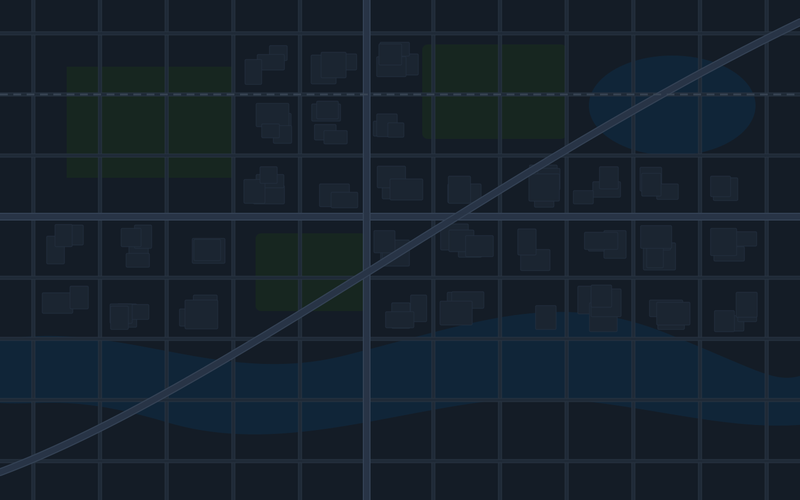

AI 동선 제안 · Day 2
고정 시간 1건 유지
−24분
1시간 12분 → 48분
변경 전
변경 후 · 2건
1
슨푸성 공원
09:30
2
시즈오카 센겐 신사
10:55
10:45
출발을 10분 당기면 11:02 버스에 맞춰 환승 대기 6분이 사라져요
3
미호노마쓰바라
(4 → 3)
14:00 고정
니혼다이라와 순서를 바꾸면 되돌아가는 9.2km 구간이 사라져요 (−18분)
4
니혼다이라 전망대
(3 → 4)
15:20
5
숙소 · 시미즈 역 앞
16:06